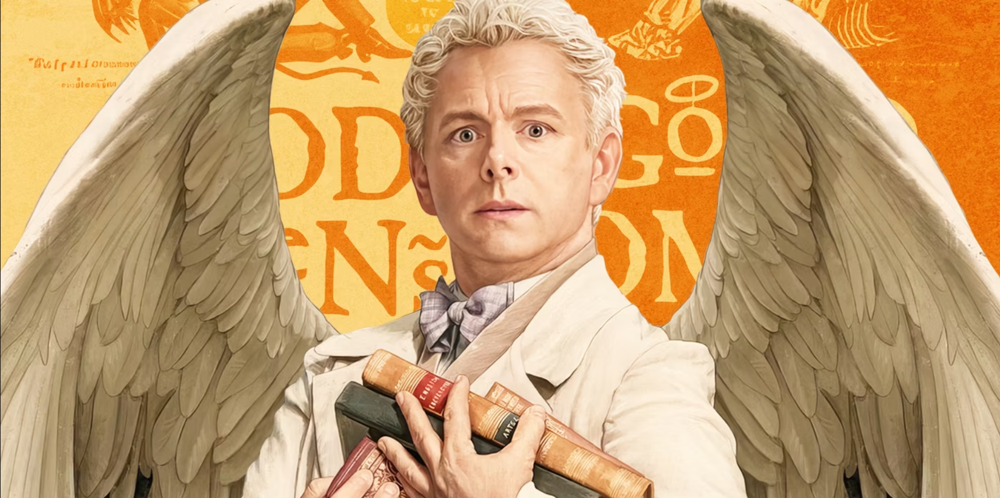
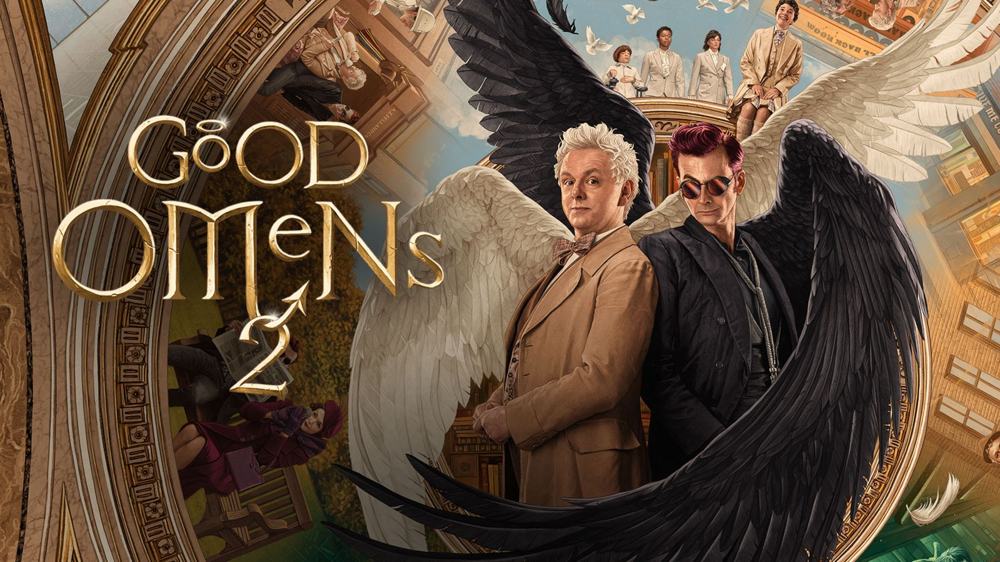
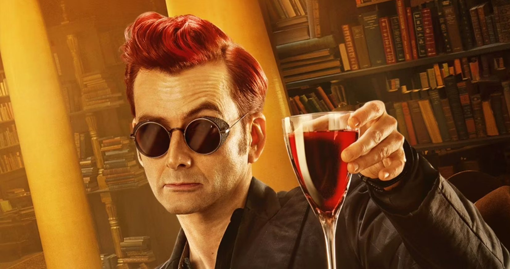

Aziraphale
Aziraphale seeks to prevent the apocalypse because he has grown to like humans and enjoy his life on Earth. There are restaurants on here, for a start. Furthermore, he does not find the idea of listening to The Sound of Music for eternity very appealing. He is Crowleys best friend and soulmate (platonic and/or romantic).


Crowley
Anthony J. Crowley is a demon and one of the main characters in Amazon series Good Omens. He was the snake that tempted Eve in the Garden of Eden, and thus his human form also has snake eyes, which he usually covers with designer sunglasses. He is Aziraphales best friend and life partner. In Season 2, Crowley admits he has romantic feelings for Aziraphale.